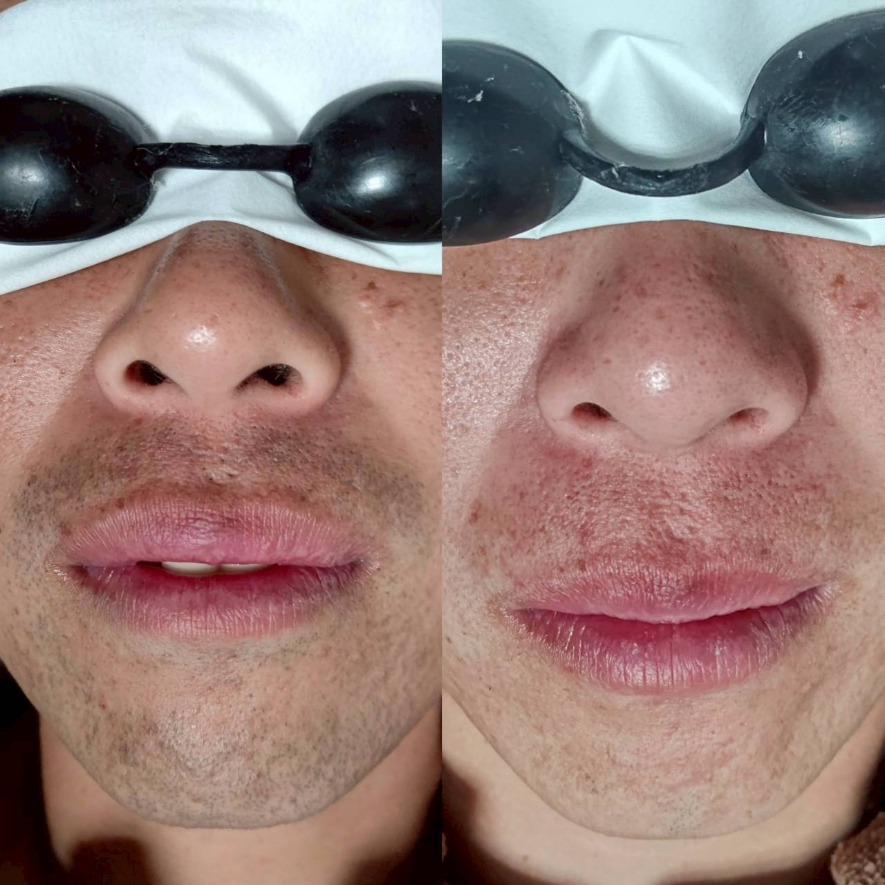

熊本の温泉・銭湯で気になる視線。VIO・全身脱毛という選択

熊本には黒川温泉や日奈久温泉をはじめ、市内にも銭湯やスーパー銭湯が多く、温泉文化に親しみのある方が多い土地です。一方で、「大浴場で人の目が気になり、つい隠すように入ってしまう」というお悩みをうかがうこともあります。
温泉・サウナ施設で気になりやすい部位
特にVIOや胸元、背中など、大浴場で自然と視界に入りやすい部位についてのご相談が多い傾向があります。自己処理で整えようとしても、範囲が広く手が届きにくいというお悩みもよく伺います。
整えておくことで、気兼ねなく楽しめる
VIOや全身脱毛で自己処理の頻度を減らしておくことで、温泉やサウナ、旅行先での大浴場を気兼ねなく楽しめるようになったという声をいただきます。友人や同僚との旅行、出張先での銭湯利用にも気が楽になったという方もいらっしゃいます。
効果の感じ方には個人差がありますが、パーツ制なのでVIOだけ、全身だけといった選び方も自由です。温泉やサウナをもっと気軽に楽しみたい方は、まずは無料カウンセリングでご相談ください。